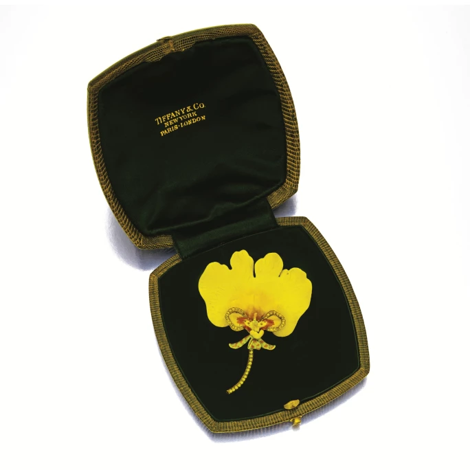
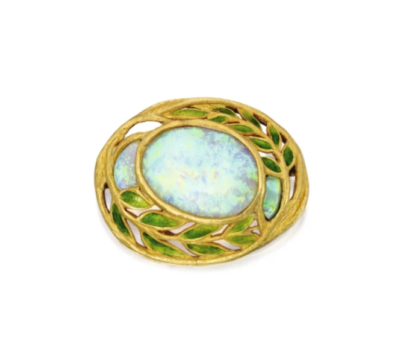
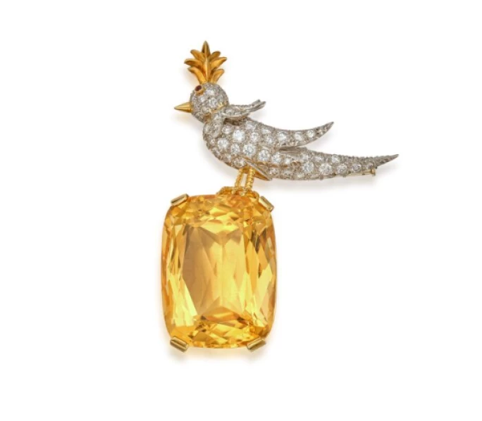
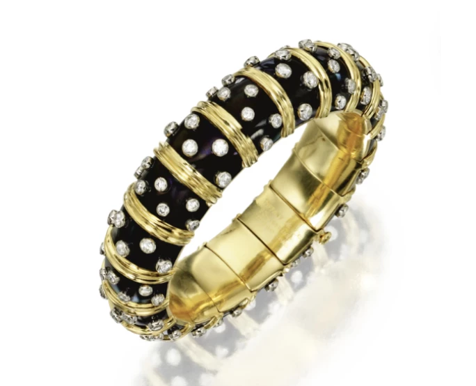
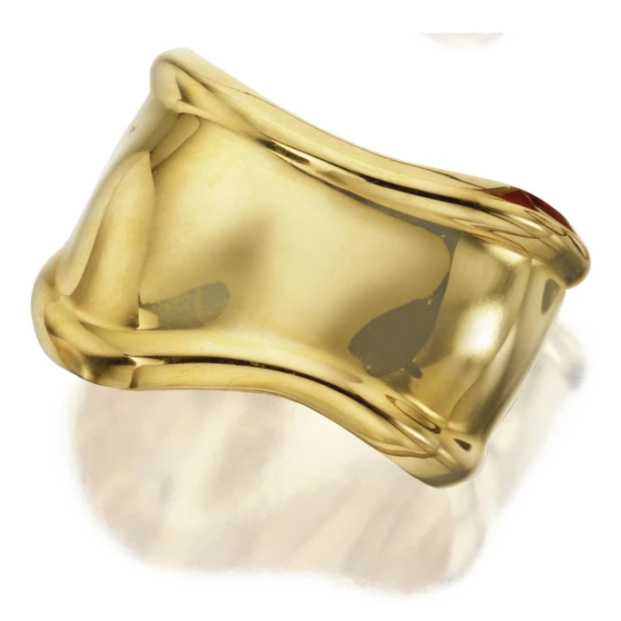
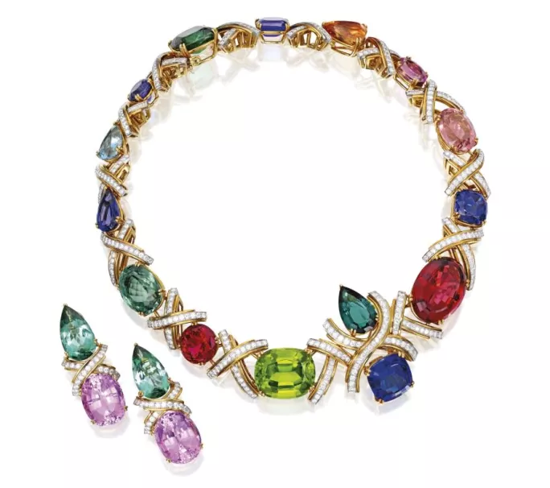

譯自 Lydia Dokko · Sotheby's
細數蒂芙尼歷史長河中，五位塑造品牌不朽傳奇的頂尖珠寶設計巨匠。
蒂芙尼：輝煌傳承
蒂芙尼由查爾斯·劉易斯·蒂芙尼（Charles Lewis Tiffany）與 J·B·楊（J.B. Young）於 1837 年創立。品牌初名「Tiffany & Young」，後發展成為以典雅風格與精湛工藝聞名於世的美國標誌性珠寶商。蒂芙尼最初是一家時尚精品店，銳意創新，在 1845 年推出首本郵購目錄「Blue Book 系列」。1853 年，查爾斯·蒂芙尼全面執掌公司，將公司更名為蒂芙尼，並奠定了品牌在鑽石珠寶領域的卓著聲望，贏得「鑽石之王」的美譽。1886 年，品牌推出經典「蒂芙尼鑲嵌法」，為訂婚戒指設計帶來革命性的改變。1940 年代，品牌經典的知更鳥蛋藍色「蒂芙尼藍」（Tiffany Blue）問世，並於 1998 年註冊為商標。位於第五大道的旗艦店於 1940 年開業，藉由 1961 年的電影《珠光寶氣》（Breakfast at Tiffany's）而聲名大噪，成為文化地標。2021 年，蒂芙尼被路威酩軒集團（LVMH）以 158 億美元收購，進一步鞏固品牌作為全球奢華巨擘的傳奇地位。
縱觀其輝煌歷史，蒂芙尼與眾多才華橫溢的設計師攜手合作，如讓·史隆伯傑（Jean Schlumberger）、艾爾莎·柏瑞蒂（Elsa Peretti）和帕洛瑪·畢加索（Paloma Picasso）等。下文將為您細述五位塑造蒂芙尼傳奇的頂尖珠寶設計巨匠。
保爾丁·法納姆

路易斯·康福特·蒂芙尼為蒂芙尼設計之黃金、蛋白石配琺瑯胸針
保爾丁·法納姆（Paulding Farnham）是 19 世紀末蒂芙尼的首席珠寶設計師，1885 年在愛德華·摩爾（Edward Moore）的指導下加入品牌。摩爾賞識法納姆的才華，委任他為 1889 年巴黎世界博覽會（Paris Exposition Universelle）設計珠寶。法納姆的琺瑯配寶石蘭花造型作品艷驚四座，贏得廣泛讚譽，助蒂芙尼一舉奪得史無前例的六枚金牌。法納姆的作品深受美國原住民陶藝及歐洲風格影響，以栩栩如生的寫實主義與精湛工藝備受稱頌。
其後，在 1900 年的巴黎世界博覽會上，法納姆與寶石學家喬治·弗雷德里克·孔茲 （George Frederick Kunz）合作，展出一枚鑲以新發現的蒙大拿藍寶石的鳶尾花胸針，驚艷全場，助蒂芙尼榮獲大獎。儘管成就斐然，法納姆因與路易斯·康福特·蒂芙尼（Louis Comfort Tiffany）在創作理念上產生分歧，於 1908 年離開公司，晚年在加州米爾谷潛心雕塑與繪畫。時至今日，他為蒂芙尼設計的花卉主題珠寶依然是炙手可熱的收藏珍品，持續吸引著無數鑑賞家。2013 年，蘇富比以 173,000 美元售出一枚由保爾丁·法納姆設計的蒂芙尼黃金、琺瑯配鑽石蘭花胸針。
路易斯·康福特·蒂芙尼

史隆伯傑為蒂芙尼設計之黃水晶、紅寶石配鑽石「石上鳥」胸針
接下來介紹的是路易斯·康福特·蒂芙尼（Louis Comfort Tiffany），蒂芙尼創始人查爾斯·路易斯·蒂芙尼之子。路易斯·康福特以其在彩繪玻璃藝術的成就聞名於世，創作了眾多經典的彩繪玻璃窗、燈具、馬賽克鑲嵌畫及陶瓷作品。1902 年，他創立蒂芙尼藝術珠寶部門，並在聖路易斯舉行的 1904 年世界博覽會（Louisiana Purchase Exposition）上推出了一系列驚艷的藝術珠寶。這些蒂芙尼作品以非傳統寶石與琺瑯精心打造，雕塑般的立體感獨樹一幟。路易斯·康福特深受新藝術運動啟發，珠寶設計常以花卉和昆蟲等有機圖案為主題。
2017 年，蘇富比以 35,000 美元售出一枚由路易斯·康福特設計的蒂芙尼胸針。此枚創於 1905 年的胸針，主石為一顆橢圓形蛋面切割蛋白石，周圍飾以鏤空葉飾，兩側伴有較小的蛋面切割蛋白石，葉片上施以通透的綠色琺瑯。蒂芙尼的創作將卓越工藝與他對色彩及自然的熱愛完美融合。他作為先驅設計師的傳奇地位歷久彌新，傑作持續在世界各地綻放魅力，啟迪靈感。
讓·史隆伯傑

史隆伯傑為蒂芙尼設計之 18K 金、鉑金、「Paillonné」琺瑯配鑽石手鐲
讓·史隆伯傑（Jean Schlumberger）為蒂芙尼創作的作品以自然為靈感，充滿奇思妙想，備受讚譽。1907 年，他在法國阿爾薩斯出生，最初為艾爾莎·夏帕瑞麗（Elsa Schiaparelli）設計作品而嶄露頭角，後於 1956 年加入蒂芙尼擔任副總裁。史隆伯傑的標誌性設計，如著名的「石上鳥」胸針，充分展現出他對鮮妍寶石的巧妙運用與精緻繁複的金工技藝。2022 年 9 月，蘇富比以 44,100 美元售出一枚由史隆伯傑為蒂芙尼設計的黃水晶、紅寶石配鑽石「石上鳥」胸針。
史隆伯傑的「Paillonné」琺瑯手鐲是其代表作之一，採用 19 世紀的古老工藝，在 18K 金上層層施以琺瑯。通透的彩色琺瑯在纖薄金箔上反覆窯燒，從而形成色澤豐厚、層次深邃的瑰麗色彩。史隆伯傑的「Paillonné」琺瑯手鐲綴以黃金和彩色寶石，至今仍是經典之作。蘇富比經常在拍賣會及網上平台上呈獻史隆伯傑為蒂芙尼設計的琺瑯手鐲。賈桂琳·甘迺迪·奧納西斯（Jackie Kennedy Onassis）便是眾多佩戴史隆伯傑琺瑯手鐲的時尚偶像之一。
史隆伯傑復興了琺瑯藝術，創作出反映他對花卉、動物與織品熱愛的珠寶。他的作品屢獲殊榮，包括科蒂時尚評論獎（Fashion Critics' Coty Award）與法國國家功績勳章（French National Order of Merit）。時至今日，史隆伯傑的設計依然備受追捧，繼續影響高級珠寶的世界。

艾爾莎·柏瑞蒂為蒂芙尼設計之「Bone Cuff」手鐲
艾爾莎·柏瑞蒂

蒂芙尼
1974 年，艾爾莎·柏瑞蒂（Elsa Peretti）加入蒂芙尼，為珠寶設計帶來革命性的改變，憑藉其首個系列將純銀提升至奢華地位。當時純銀被認為不適用於高級珠寶，但艾爾莎·柏瑞蒂仍大膽在系列中採用純銀。她認為珠寶應當實用，舒適得足以伴人入眠，且不受傳統禮節的束縛。在她與蒂芙尼合作之前，品牌自經濟大蕭條以來未曾銷售過銀飾。
柏瑞蒂以自然為靈感的設計成為經典，包括「Diamonds by the Yard」、「Open Heart」、「Bean」設計以及備受讚譽的「Bone Cuff」手鐲系列。「Bone Cuff」手鐲的設計靈感源於柏瑞蒂兒時所見的宗教聖物，設計符合人體工學的精準程度，甚至需要根據佩戴者的左腕或右腕單獨購買。這款手鐲至今依然時尚如初，是雋永的現代經典。2023 年，蘇富比以 55,000 歐元售出一對艾爾莎·柏瑞蒂設計的「Bone Cuff」手鐲。
帕洛瑪·畢加索

帕洛瑪·畢加索為蒂芙尼設計之 18K 金、鉑金、彩色寶石配鑽石項鍊及耳夾
帕洛瑪·畢加索（Paloma Picasso），藝術家巴勃羅·畢加索（Pablo Picasso）與弗朗索瓦絲·吉洛（Françoise Gilot）之女，自幼便展現出創作才華。她於 1979 年加入蒂芙尼，最初為一個展覽設計餐桌佈置，其後促成了一項獨家合作，並推出了其標誌性的「Paloma's Graffiti」珠寶系列。受紐約街頭藝術啟發，她將塗鴉元素轉化為以珍貴材質打造的高級珠寶。
1980 年代，帕洛瑪在設計中引入色彩鮮明、常被忽略的寶石。2015 年，蘇富比以 478,000 美元售出一套獨一無二的 18K 金、鉑金、彩色寶石配鑽石項鍊及耳夾。此項鍊創作於 1985 年，旨在慶祝畢加索與蒂芙尼合作 5 週年。這款項鍊融入帕洛瑪的「X」圖案，以色彩斑斕的寶石與鑽石，完美體現 1980 年代的華麗風尚。項鍊由多種切割的坦桑石、紅碧璽、橄欖石、碧璽及拓帕石組成，並以鑲嵌總重約 18.30 克拉圓形鑽石的 X 形圖案作點綴。時隔 35 年，帕洛瑪為蒂芙尼設計的作品依然充滿活力，其作品仍可見於「Olive Leaf」設計、「Melody」手鐲及「Graffiti」設計等系列。